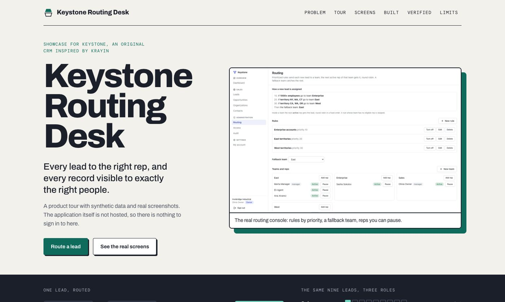

CRM · Routing and visibility · 2026-10
Keystone: every lead to the right rep
Every lead to the right rep, and every record visible to exactly the right people.

The CRM itself is private and not hosted: the public repo and the showcase site contain only the showcase source. Every screenshot is a real capture of the running app with synthetic data; the in-page tour is a labeled illustration of the app's own rules, not a live backend. Original implementation inspired by Krayin; no affiliation.
01 — The problem
A sales manager needs incoming leads routed automatically and fairly, and access limited by team, ownership and action, with every decision explainable.
Defining workflow: Configure two teams and a territory rule, submit leads concurrently and see them routed and balanced, then check that an agent sees only their own records, a manager sees the team scope, and a direct unauthorized API call fails.
02 — What I built
One of eleven independent CRM MVPs in a single monorepo, each with its own database, migrations, tests and review packet. This one is inspired by Krayin and is called Keystone.
- Prioritized routing rules (territory, company size, source), a deterministic fallback, and round robin among eligible active reps, locked per team under concurrency
- A permission matrix of resource actions with own, team and workspace scope plus separate sensitive capabilities, enforced by one policy evaluator
- Lead qualification and conversion to an organization, contact and opportunity; opportunity pipeline with history
- Append-only assignment and permission audit; no privilege escalation; the last owner cannot be removed (database trigger)
03 — How it was built
- 01
Specify before building
An acceptance document names the persona, the bounded scope, what is deferred, and ties every required feature to evidence (a test, an end-to-end journey or a recorded check).
- 02
Model the database so the rules hold even if the code is wrong
A Prisma schema plus a hand-written migration of CHECK constraints, composite foreign keys that pin every record to its workspace, and triggers. The tests try to break these from raw SQL.
- 03
Build the distinguishing workflow through every layer
Prioritized routing rules (territory, company size, source), a deterministic fallback, and round robin among eligible active reps, locked per team under concurrency
- 04
Prove it in a fresh clone
20 gate checks pass and 0 fail in a fresh clone of commit 9522ef029e: 2 unit, 31 integration against a real PostgreSQL, 15 browser tests on the production build, container start, a live black-box check, restart persistence, backup and restore, and a production-dependency audit.
- 05
Review it as an independent reader would
A review packet lists what is implemented, what is measured, what was fixed on the way, and every known limit and release blocker, so nothing here is claimed beyond its evidence.
04 — Results
20 gate checks pass and 0 fail in a fresh clone of commit 9522ef029e: 2 unit, 31 integration against a real PostgreSQL, 15 browser tests on the production build, container start, a live black-box check, restart persistence, backup and restore, and a production-dependency audit.
Screenshots on the showcase site are real captures at 1440, 768 and 390 pixels wide, taken from the production build with synthetic data.
05 — What I'd do next
- One default pipeline per workspace; routing by territory code, source and company size only
- Round robin is unweighted; no scoring, capacity or working-hour rules; no email or lead-capture webhooks
- Permissions apply to records, not individual fields; exports capped at 10,000 rows
- Not production-ready: no TLS, proxy or monitoring provisioned